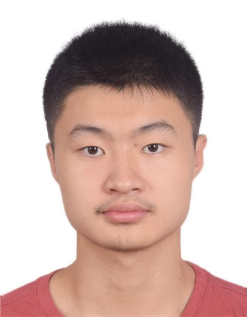

Distilling Efficient Vision Transformers from CNNs for Semantic Segmentation
-

Xu Zheng
AI Thrust, HKUST(GZ)
-

Yunhao Luo
Brown University
-
Pengyuan Zhou
USTC
-

Addison Lin Wang
AI Thrust, HKUST(GZ)
Dept. of CSE, HKUST
Abstract
In this paper, we tackle a new problem: how to transfer knowledge from the pre-trained cumbersome yet well-performed CNN-based model to learn a compact Vision Transformer (ViT)-based model while maintaining its learning capacity?
Due to the completely different characteristics of ViT and CNN and the long-existing capacity gap between teacher and student models in Knowledge Distillation (KD), directly transferring the cross-model knowledge is non-trivial.
To this end, we subtly leverage the visual and linguistic-compatible feature character of ViT (\ie, student), and its capacity gap with the CNN (\ie, teacher) and propose a novel CNN-to-ViT KD framework, dubbed \textbf{C2VKD}.
Importantly, as the teacher's features are heterogeneous to those of the student, we first propose a novel visual-linguistic feature distillation (\textbf{VLFD}) module that explores efficient KD among the aligned visual and linguistic-compatible representations. Moreover, due to the large capacity gap between the teacher and student and the inevitable prediction errors of the teacher, we then propose a pixel-wise decoupled distillation (\textbf{PDD}) module to supervise the student under the combination of labels and teacher's predictions from the decoupled target and non-target classes.
Experiments on \textbf{three} semantic segmentation benchmark datasets consistently show that the increment of mIoU of our method is over \textbf{200\%} of the SoTA KD methods.
Experimental Results

BibTeX
@inproceedings{,
title={},
author={},
booktitle = {},
year={}
}